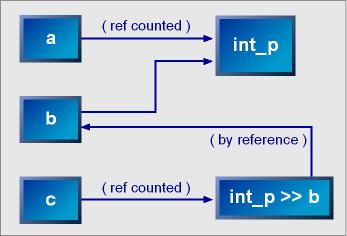

| The Rule |
 |
 |
 |
The rule is a polymorphic parser that acts as a named place-holder capturing the behavior of an EBNF expression assigned to it. Naming an EBNF expression allows it to be referenced later. The rule is a template class parameterized by the type of the scanner (ScannerT) and the rule's context (ContextT, to be discussed later). Default template parameters are provided to make it easy to use the rule.
template
<
typename ScannerT = scanner<>,
typename ContextT = parser_context
>
class rule;Default template parameters are supplied to handle the most common case. ScannerT defaults to scanner<>, a plain vanilla scanner that uses char const* iterators and does nothing special at all other than iterate through all the chars in the null terminated input a character at a time. ContextT defaults to parser_context, a predefined context that also does nothing special. In trivial cases, declaring a rule as rule<> is enough.
The rule class models EBNF's production rule. Example:
rule<> a_rule = *(a | b) & +(c | d | e);The type and functionality of the right-hand (rhs) EBNF expression, which may be arbitrarily complex, is encoded in the rule named a_rule. a_rule may now be referenced elsewhere in the grammar:
rule<> another_rule = f >> g >> h >> a_rule;The definition of the rule (its right hand side) is reference counted and held by the rule through a smart pointer. Rules may share definitions. However, when a rule itself is referenced by an EBNF expression, the rule is held by the expression by reference. It is the responsibility of the client to ensure that the referenced rule stays in scope and does not get destructed while it is being referenced. Here, we cannot share the reference counted definition because grammars are highly recursive in nature. We use weak references instead to prevent memory leaks. The following diagram depicts the scenario:
a = int_p; b = a; c = int_p >> b;
|  |
A rule may be declared before being defined to allow cyclic structures typically found in BNF declarations. Example:
rule<> a, b, c;
a = b | a;
b = c | a;The right-hand side of a rule may reference other rules, including itself. The limitation is that direct or indirect left recursion is not allowed (this is an unchecked run-time error that results in an infinite loop). This is typical of top-down parsers. Example:
a = a | b; // infinite loop!An undefined rule matches nothing and is semantically equivalent to nothing_p.
Like any other C++ assignment, a second assignment to a rule is destructive and will redefine it. The old definition is lost. This allows rules to be copied and passed around by value. Copying and assignment are both inexpensive since the rule stores its data using a reference counted smart pointer.
Some BNF variants allow multiple declarations of a rule. The declarations are taken as alternatives. Example: r =
a; is equivalent to: r =
a | b;Spirit v1.3 allowed this behavior. However, the current version of Spirit no longer allows this because experience shows that this behavior leads to unwanted gotchas (for instance, it does not allow rules to be held in containers). In the current release of Spirit, a second assignment to a rule will simply redefine it. The old definition is destructed. This follows more closely C++ semantics and is more in line with what the user expects the rule to behave. |
Rules straddle the border between static and dynamic C++. In effect, a rule transforms compile-time polymorphism (using templates) into run-time polymorphism (using virtual functions). This is necessary due to C++'s inability to automatically declare a variable of a type deduced from an arbitrarily complex expression in the right-hand side (rhs) of an assignment. Basically, we want to do something like:
T rule = an_arbitrarily_complex_expression;without having to know or care about the resulting type of the right-hand side (rhs) of the assignment expression. Apart from this, we also need a facility to forward declare an unknown type:
T rule;
...
rule = a | b;These limitations lead us to this implementation of rules. This comes at the expense of the overhead of a virtual function call, once through each invocation of a rule.
Hosting declarative EBNF in imperative C++ yields an interesting blend. We have the best of both worlds. We have the ability to conveniently modify the grammar at run time using imperative constructs such as if, else statements. Example:
if (feature_is_available)
r = add_this_feature;Rules are essentially dynamic parsers. A dynamic parser is characterized by its ability to modify its behavior at run time. Initially, an undefined rule matches nothing. At any time, the rule may be defined and redefined, thus, dynamically altering its behavior.
Rules are dynamic. A rule can change its definition anytime:
r = a_definition;
r = another_definition;Rule r loses the old definition when the second assignment is made. As mentioned, an undefined rule matches nothing and is semantically equivalent to nothing_p. When a rule is assigned to another rule:
r1 = r2;The LHS rule will hold the current dynamic state state of the RHS rule. This means that if the RHS rule is not yet defined at the point of assignment, the LHS rule will be undefined regardless if the RHS rule is defined later:
r1 = r2; // r1 and r2 are undefined
r2 = define_r2; // r2 is defined, WARNING! r1 is still undefined!!!If we really want r1 to alias r2, whereby following its definition all the time, instead of assignment, we need to alias r2:
r1 = r2.alias(); // r1 and r2 are undefined
r2 = define_r2; // r2 is defined, r1 follows r2's definitionTypically, parsers have what is called a start symbol, chosen to be the root of the grammar where parsing starts. The Spirit parser framework has no notion of a start symbol. Any rule can be a start symbol. This feature promotes step-wise creation of parsers. We can build parsers from the bottom up while fully testing each level or module up untill we get to the top-most level.
Each rule has an id of type parser_id. The default id of each rule is set to the address of that rule (converted to an integer). This is not always the most convenient, since it is not always possible to get the address of a rule to compare against. So, you can override the default id used by each rule by calling set_id(parser_id) on a rule. Example:
a_rule.set_id(123); // set a_rule's id to 123We have touched on the scanner before (see Basic Concepts). The rule's context however is a new concept. An instance (object) of the context class is created before the rule starts parsing and is destructed after parsing has concluded. The following pseudo code depicts what's happening when a rule is invoked:
return_type
rule::parse(ScannerT const& scan)
{
context_t ctx(/**/);
ctx.pre_parse(/**/);
// main parse code of the rule here...
return ctx.post_parse(/**/);
}The context is provided for extensibility. Its purpose is to expose the start and end of the rule's parse member function to accomodate external hooks. We can extend the rule in a multitude of ways by writing specialized context classes, without modifying the rule class itself. For example, we can make the rule emit debug diagnostics information by writing a context class that prints out the current state of the scanner at each point in the parse traversal where the rule is invoked.
Example of a rule context that prints out debug information:
pre_parse: rule XXX is entered. The current state of the input
is "hello world, this is a test"
post_parse: rule XXX has concluded, the rule matched "hello world".
The current state of the input is ", this is a test"Most of the time, the context will be invisible from the user's view. In general, clients of the framework need not deal directly nor even know about contexts. Power users might find some use of contexts though, thus, this has become part of the rule's public API. Other parts of the framework in other layers above the core take advantage of the context to extend the rule. The context will be covered in further detail later.
|
|
|
Copyright © 1998-2003 Joel de Guzman
Permission to copy, use, modify, sell and distribute this document
is granted provided this copyright notice appears in all copies. This document
is provided "as is" without express or implied warranty, and with
no claim as to its suitability for any purpose.